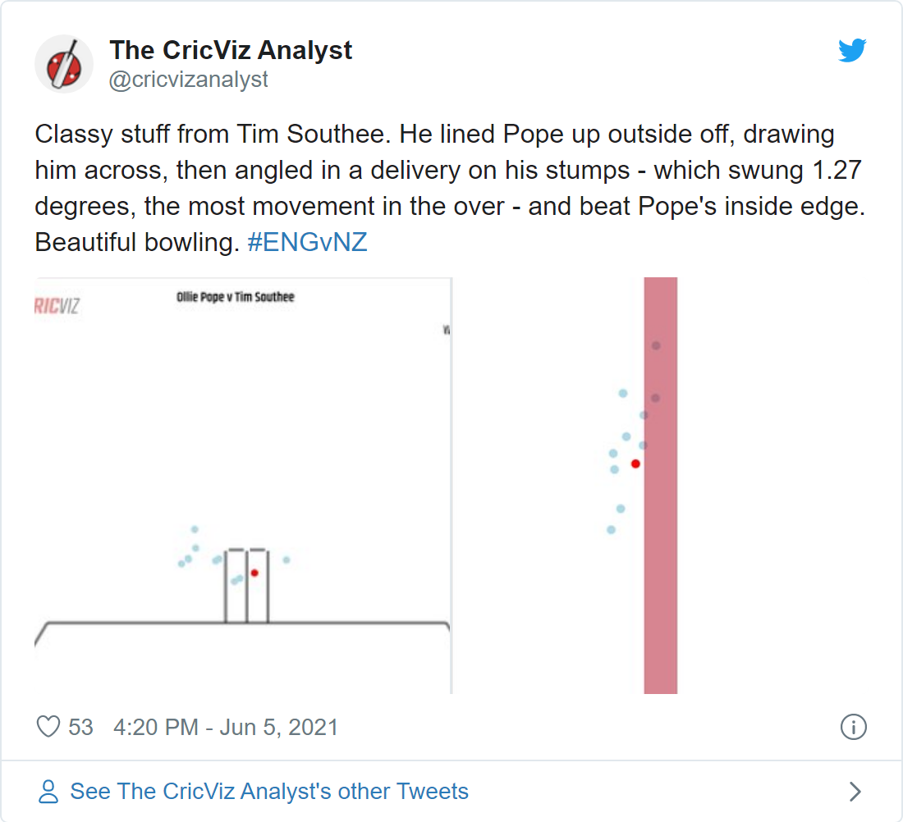

Modern day, International Test cricket can be unforgiving to orthodoxy, especially when it comes to right-arm pace bowling. Pat Cummins’ consistency, pace and control, Rabada’s pace and seam movement, Bumrah’s unique slingy action, pace and control, among others, are some qualities everyone wishes their national teams hope to see in their pace attack. In all of these cases, that bit of orthodox right-arm pace bowling either comes packaged on top of something unique about the bowling style or, in some cases, we do not even there to be seen. There are so many names which make the list that cannot possibly be mentioned here. And it is difficult to lay a finger on some aspect of some of the right-arm bowlers’ action and say, yes that’s the bit I have seen before. Now, to the general public, even the mention of Tim Southee sounds quite out of place. Like shoe-horning dessert when we are not even finished with all other courses of the meal yet. Yet, over the course of the past three years, this orthodox of right-arm medium fast out-swing – yes, that extinct species – bowler has had a phenomenal run of form. Since 2018, he has picked up 99 wickets in 20 at an average of 21.88. ]. That bowling average is ridiculously absurd. It is amply clear from last week’s performance that this run of form has not gone anywhere and, if continued, might come to haunt the imagination of Indian cricket fans. So, let’s unpack what is underpinning Southee’s form and what are some strategies that the Indian top-order can use to counteract his methods.
Honestly, there is nothing much to be unpacked here, except for how excellent Southee is at setting up right-handed batsmen. He is only the third New Zealand bowler, after Sir Richard Hadlee and Daniel Vettori, to pick up 300 international Test scalps. Of this total of 309 scalps, 63% have been right-handed batsmen. Considering India’s top five batsmen are all right-handers, the outcome of the game might hinge upon how they play him. Unless India are thinking of changing their batting order somewhat by batting Rishab Pant a bit higher up the order, Southee will be secretly frothing at the prospect of bowling to this line-up. It is not easy to be facing someone in such an absurdly good run of form and the margins of error are scant, if any. Let’s have a look at how Southee lays the trap for right-handed batsmen. Here’s a pitchmap of line and lengths with the average of amount of runs scored by a batsmen at varied channels.

Figure 1: Source: @CricInsights21 on Twitter
Now, compare this with the template which Southee used to dismiss Ollie Pope in the recently concluded series against England.

There is little difference in the line and length of the wicket taking delivery compared to the others. In fact, as data suggests, Southee here is bowling in a channel where batsmen find it relatively easy to score in these conditions. And sure enough, Pope scored two boundaries of Southee on both side of the wickets. But – and this is where Southee works his magic – after consistently taking the ball away from Pope, he got one to sharply nip back into him and caught him plumb in front of the stumps. As the tweet by CricViz perfectly encapsulates, because Pope was drawn across to play the ball being consistently delivered around and/or outside the off-stump, he was caught on the crease – right in front of the stumps – when Southee got one to nip back in. What it does not clarify, however, is that Pope is very technically sound. Because of being a little out of position to play this ball, despite his bat coming down just in time, the ball only slightly nipped past the gap between his bat and pad. And herein lies the ridiculous skill of Southee, he gets the job done by perfectly executing a plan where the room for error is barely a sliver. A simple method with brilliant execution. This is what Jarrod Kimber had to say about how the essence of Southee’s bowling has remained the same despite his evolution as a right-arm medium fast bowler:
[“But that’s still what he is, someone who bowls abnormally swinging balls at and around off stump”] (https://wickets.substack.com/p/noticing-tim-southee)
As if this isn’t enough, his figures outside New Zealand since 2018 are, once again, spectacularly absurd. But, thankfully, this absurdity has already been probed by Jarrod Kimber. Southee has always been very good with the new ball, for obvious reasons. However, his bowling average between the overs 40-80 was 30.5, until the start of 2018. From thereon, it has been 15.6. Yes, you have read that correctly, IT HAS BEEN 15.6.
All of this raises a set of, thorny but fascinating, questions for Indian batsmen. And, while it will be equally fascinating to see how, one of the most formidable batting line-up in the world right now will combat this threat, here are some things Indian batters will have to keep in mind.
Use the crease:
The current Indian captain Virat Kohli’s two contrasting tours of 2014 and 2018 in England are a prime case-study about how batsmen can smartly use the crease to counter the moving ball. This video explains the changes he made but somehow misses to point out something that is quite visible in the video itself – Virat Kohli is standing a yard outside of his batting crease when facing a moving ball in 2018. Southee has dismissed him 10 times in international cricket. And no doubt Virat Kohli will be extremely eager to right these wrongs at one of the biggest stages world cricket has to offer. So brace yourselves, it is going to be one heck of a match-up between these two. Here’s what his childhood coach Rajkumar Sharma had to say about his dismissals against Southee “It is not that Virat Kohli doesn’t know where he has made a mistake but despite that Southee has dismissed him ten times, so it is definitely a point of concern and I feel Virat will work on this and leave more balls outside the off-stump” So, India’s batsmen, take a page out of your captain’s book while facing Southee and try to not get trapped on the crease because that would mean directly into Southee’s hands. And the numbers concisely say that he rarely errs.
Be reasonable with attack:
It doesn’t take a genius to point out that everything outside the off-stump with a Dukes ball in English conditions should not be messed with. But as has been evident recently, Southee has gotten unbelievably good with the old ball. And the Dukes ball doesn’t lose much of its movement unlike the SG and Kookaburra balls. So, be smart about your off-side play. This time pick up a page from Pujara’s textbook and read it to yourself until your whole body complies with not being lured to flash at anything remotely outside the off-stump while facing an in-form outswing bowler with a Dukes ball in his hand.
India has lost 11 out of the last 14 games they have played in England. Throughout these games, the average run-rate, across both the innings, has been around 3.16 per over. That is an extremely risky approach in English conditions. Although the losses might not be entirely attributable to this fact alone, there is no doubt about the fact that India losing a wicket for every 25 runs scored during these matches did play a part in the eventual outcome. They would definitely know all of these numbers and it would be interesting to see how the top-order approaches the innings but it would be wise to err on the side of caution.
Batting at the highest level in a historic event definitely is never easy. Things are exacerbated when there are in-form fast bowlers to add to your misery. But if you were to pick up a squad of top-order right-handed batsmen to face a Southee in red hot form, surely, at least 3 batsmen from this current Indian top-order would be the first names majority of the people would pen. Therefore, despite all the recent sordid memories which come unbidden when mixing the combination of Indian top-order, English conditions, seam bowlers and knockout games, India will be ready to embrace this challenge. Let’s just hope that, this time, the memories Indian fans takeaway wouldn’t be of seeing their batting unravel against some majestically orthodox swing bowling.